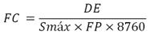
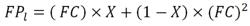
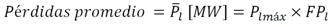
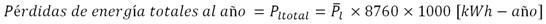

Siempre es más fácil conocer las normas ENEL-CODENSA
Rolex Rolex gold watch, compared with ordinary materials, gold watches are often expensive, but the replica rolex gold watch has the role of swiss replica watches hedging, so that it often becomes the first choice for collectors. The gold watch has value in the world, largely because the omega replica watch brand launched a commemorative limited edition watch or a replica hublot complex movement process or artistic attainments deep watches, mostly preferred gold precious metals such material. These watches tend to have a strong hedging function, therefore, Rolex Rolex gold watch reputation.

NIVELES DE TENSIÓN DE CONEXIÓN DE CARGAS DE CLIENTES
Datos adicionales
Número de la norma
OT1
Fecha de vigencia
03/04/2018
Herramientas adicionales
- Contenido Ocultar
- INTRODUCCIÓN
- OBJETIVO
- PRINCIPIOS REGULATORIOS DEL SISTEMA ELÉCTRICO NACIONAL
- NIVELES DE TENSIÓN
- METODOLOGÍA PARA LA DETERMINACIÓN DEL NIVEL DE TENSIÓN DE CONEXIÓN DE UNA CARGA
- CONFIGURACIÓN DE LA RED DE MEDIA TENSIÓN NIVEL II Y III (11.4 KV – 13.2 KV – 34.5 KV)
- ESQUEMA ANILLO ABIERTO
- ESQUEMA ANILLO ABIERTO CON TRANSFERENCIA
- CARGABILIDAD DE LA RED DE MEDIA TENSIÓN
- ESTIMACIÓN DE LA DEMANDA DE ENERGÍA ANUAL
- CÁLCULO DE REGULACIÓN DE TENSIÓN
- ESTIMACIÓN DE PÉRDIDAS DE ENERGÍA ANUALES
- ANÁLISIS DE REMUNERACION DE ACTIVOS DE USO E INVERSIÓN
- CALIDAD DE LA POTENCIA
- CARACTERIZACIÓN DE LA DEMANDA
- DEFINICIÓN DE NIVELES DE TENSIÓN DE CONEXIÓN
INTRODUCCIÓN
Uno de los principios regulatorios más importantes dentro del sector eléctrico es el de libre acceso a las redes. En desarrollo de este principio, CODENSA como Operador de Red (OR), tiene la responsabilidad de asignar un punto de conexión que permita al cliente contar con un suministro energético eficiente acorde a sus necesidades de carga y características de operación del Sistema Eléctrico.El Parágrafo 1 del Artículo 13 de la Resolución CREG 097 de 2008 con la cual se aprobó la metodología para el establecimiento de los cargos por uso de los Sistemas de Transmisión Regional y Distribución Local señala que los OR deben disponer de un estudio técnico, que considere entre otros aspectos: pérdidas, regulación y calidad de su sistema que permita determinar, según la capacidad de conexión solicitada por un usuario, el nivel de tensión al cual debería conectarse, sujeto a que exista capacidad disponible en el punto de conexión solicitado.
En cumplimiento de lo expuesto se presentan los resultados del Estudio realizado por CODENSA S.A. ESP, y la metodología que se siguió para llegar a ellos.
OBJETIVO
El objetivo de este documento es definir los niveles de tensión para la conexión de cargas de clientes, según la capacidad de conexión solicitada por un usuario de acuerdo con lo establecido por la CREG en la Resolución CREG 097 de 2008.PRINCIPIOS REGULATORIOS DEL SISTEMA ELÉCTRICO NACIONAL
El Reglamento de Distribución de Energía Eléctrica, contenido en la Resolución CREG 070 de 1998, regula la actividad de Transmisión Regional y/o Distribución Local de Energía Eléctrica, con base en principios de eficiencia, calidad y neutralidad, conforme a lo establecido en la Ley 142 de 1994 y define los criterios y procedimientos para la ejecución y operación de conexiones de los usuarios.Respecto a la conexión de cargas se destacan los siguientes aspectos de la Resolución asociados al objeto de este Documento:
- El Operador de Red está en la obligación de ofrecer al usuario un punto de conexión factible a su sistema cuando éste lo solicite y garantizará el libre acceso a la red. Para tal efecto, el usuario deberá informar sobre la localización del inmueble, la potencia máxima requerida y el tipo de carga.
- El OR podrá especificar un nivel de tensión de conexión diferente al solicitado por el Usuario por razones técnicas debidamente sustentadas.
- En el evento de que la confiabilidad y calidad requeridas por el Usuario sean superiores a los estándares establecidos y para mejorarlas se requieran obras de infraestructura para reforzar el STR y/o SDL que opera el OR, el pago de los costos que resulten serán asumidos por el Usuario.
- Lo dispuesto por el artículo 4.4.1. “solicitud de factibilidad del servicio y puntos de conexión” de la Resolución CREG 070 de 1998.
- El contenido del artículo 4.4.2 respecto de la “solicitud de conexión” de la Resolución CREG 070 de 1998.
- Y el artículo 4.4.3 de la Resolución CREG 070 de 1998, que señala los “plazos y procedimientos para la aprobación o improbación de las solicitudes de conexión por parte del OR”.
“(…) La empresa solo podrá negar la solicitud de conexión del servicio en los siguientes casos:
a) Por razones técnicas susceptibles de ser probadas que estén expresamente previstas en el contrato.
b) Cuando la zona haya sido declarada como de alto riesgo, según decisión de la autoridad competente.
c) Cuando el suscriptor potencial no cumpla las condiciones establecidas por la autoridad competente.
La negación de la conexión al servicio, deberá comunicarse por escrito al solicitante, con indicación expresa de los motivos que sustentan tal decisión. Contra esa decisión procede el recurso de reposición ante la empresa, y en subsidio el de apelación ante la Superintendencia de Servicios Públicos, conforme al artículo 158 y 159 de la ley 142 de 1994, que regulan los recursos ante las empresas de servicios públicos.”
De manera complementaria, el usuario debe tener en cuenta los derechos y obligaciones contenidos en el Contrato de Condiciones Uniformes de CODENSA dentro del cual se tienen como obligaciones del Usuario, en particular las siguientes:
- Utilizar el servicio únicamente en el inmueble para la cuenta, carga y clase de servicio para los que se contrató, de acuerdo con las condiciones y fines de energía estipulados en la respectiva solicitud de servicio o contrato.
- Cumplir con los requisitos y especificaciones técnicas establecidas para el diseño y construcción de las instalaciones eléctricas con observancia de los requisitos específicos definidos en RETIE.
NIVELES DE TENSIÓN
Los sistemas de Transmisión Regional y/o Distribución Local se clasifican por niveles, en función de la tensión nominal de operación, según la siguiente definición:Nivel 4: Sistemas con tensión mayor o igual a 57.5 kV y menor a 220 kV.
Nivel 3: Sistemas con tensión mayor o igual a 30 kV y menor a 57.5 kV.
Nivel 2: Sistemas con tensión mayor o igual a 1 kV y menor a 30 kV.
Nivel 1: Sistemas con tensión menor a 1 kV.
METODOLOGÍA PARA LA DETERMINACIÓN DEL NIVEL DE TENSIÓN DE CONEXIÓN DE UNA CARGA
La metodología utilizada involucra consideraciones regulatorias tales como normas, criterios técnicos, criterios de inversión, etc; consideraciones del sistema eléctrico como el nivel de tensión, los tipos de conductores, las unidades constructivas, etc; y la información de la carga, como son la demanda de potencia, el factor de potencia, el factor de carga, etc.Así mediante la utilización del modelo de la red, la carga y flujos de carga sucesivos se determinan las potencias máximas extraíbles y las pérdidas técnicas de energía del sistema, verificando que los valores de las variables eléctricas se encuentren dentro de los límites permitidos.
Adicionalmente, se consideran los costos típicos de conexión, buscando además de la viabilidad técnica de la conexión, la eficiencia económica de la misma.
En este sentido la información utilizada se encuentra contenida en la regulación vigente, los requerimientos normativos aplicables a nivel nacional y las normas de construcción y especificaciones técnicas de CODENSA S. A. E.S.P.
Para determinar el Nivel de Tensión de conexión de una carga se contempla los siguientes aspectos:
CONFIGURACIÓN DE LA RED DE MEDIA TENSIÓN NIVEL II Y III (11.4 KV – 13.2 KV – 34.5 KV)
Los circuitos primarios de distribución se construirán en anillo abierto, mediante la utilización de suplencias con equipos de operación bajo carga, con telecontrol, con otros circuitos cuando se presenten eventos de contingencia, mantenimiento u operativas.En los casos que aplique, sobre la red principal del circuito deberán instalarse como mínimo dos (2) equipos de operación bajo carga (Reconectadores normalmente cerrados) que seccione dicha red en tres (3) tramos, esto con el fin de garantizar la selectividad y operación de la red en caso de fallas y/o mantenimiento.
De acuerdo con el criterio de cargabilidad aplicado para cargas homogéneas, el primer seccionamiento (Reconectador) ubicado con 2/3 tercios de la carga total del circuito (66%) se efectuará con un equipo de operación bajo carga con protección y control el cual dispondrá de comunicación con el Centro de Control. El segundo seccionamiento ubicado con 1/3 tercio de la carga total del circuito (33%) aplicara el mismo concepto indicado anteriormente.
La configuración de los circuitos de Nivel de Tensión II es de tipo radial en anillo abierto.
La configuración de los circuitos de Nivel de Tensión III, estará dirigida a atender clientes industriales y subestaciones MT/MT, y su esquema podrá ser de anillo abierto o abierto con transferencia.
ESQUEMA ANILLO ABIERTO
La configuración en anillo comprende la operación no simultánea de dos circuitos en eventos de contingencia sobre cualquiera de ellos. El principio de funcionamiento para aislar la zona de falla o de intervención se efectúa mediante la operación automática de los equipos de maniobra (Interruptor, reconectador y/o seccionalizador), de manera que la zona afectada sea máxima una tercera parte de la carga total del circuito.Esta configuración utiliza equipos de operación bajo carga entre circuitos normalmente abiertos que permite el restablecimiento del servicio y aislamiento de la zona de falla en forma automática con supervisión y control desde el Centro de Control. En la Figura 1 se presenta un esquema de la configuración para circuitos en anillo abierto aéreo.

Figura 1. Configuración Anillo Abierto
ESQUEMA ANILLO ABIERTO CON TRANSFERENCIA
Este esquema se plantea para circuitos que atienden zonas con alto impacto10 por interrupción del servicio de energía y donde las condiciones técnicas los permitan.La operación de los equipos de maniobra se realiza de manera bi-direccional con el fin de aislar selectivamente la zona de falla en eventos de contingencia garantizando la continuidad del servicio. El esquema de anillo abierto con transferencia es utilizado para soporte de cargas sensibles como subestaciones MT/MT, clientes industriales, hospitales, etc, para asegurar que el suministro de tensión desde una red alternativa en el caso de una falla en la red principal. En la Figura 2 se presenta un esquema de la configuración para circuitos en anillo abierto con transferencia.

Figura 2. Configuración Anillo Abierto con transferencia
CARGABILIDAD DE LA RED DE MEDIA TENSIÓN
Con el fin de garantizar la confiabilidad en el servicio y mejorar la operatividad de los circuitos existentes de media tensión, la cargabilidad de circuitos radiales en condiciones normales de operación será hasta el 70% de la capacidad nominal del conductor de salida.En eventos de contingencia sobre configuraciones radiales, un alimentador debe estar en capacidad de asumir una tercera parte de carga real de otro alimentador a través de la suplencia, su cargabilidad máxima deberá ser el 100 % de la capacidad nominal de la red principal.
En la tabla 1 y 2 se indica las potencias de los circuitos en condiciones normales de operación y en contingencia para los niveles de tensión II y III para redes aéreas y subterráneas.
Tabla 1. Capacidad de corriente y potencia de conductores aéreos
| CONDUCTOR | CAPACIDAD CORRIENTE [A] | MVA OPERACIÓN (70 %) | MVA OPERACIÓN (100 %) | ||||
| 11,4 kV | 13,2 kV | 34,5 kV | 11,4 kV | 13,2 kV | 34,5 kV | ||
| 266,8 MCM ACSR (DESNUDO) | 448 | 6,19 | 7,17 | 18,74 | 8,85 | 10,24 | 26,77 |
| 4/0 AWG ACSR (DESNUDO) | 357 | 4,93 | 5,71 | 14,93 | 7,05 | 8,16 | 21,33 |
| 2/0 AGW ACSR (DESNUDO) | 273 | 3,77 | 4,37 | 11,42 | 5,39 | 6,24 | 16,31 |
Tabla 2. Capacidad de corriente y potencia de conductores subterráneos
| CONDUCTOR | CONFIGURACIÓN | CAPACIDAD CORRIENTE [A] | MVA OPERACIÓN (70 %) | MVA OPERACIÓN (100 %) | ||||
| 11,4 kV | 13,2 kV | 34,5 kV | 11,4 kV | 13,2 kV | 34,5 kV | |||
| 300 MCM Cu (A) | 1 Circuito- | 357 | 4,93 | 5,71 | 15 | 7,05 | 8,16 | 21,33 |
| 3 Circuitos- | 285 | 3,94 | 4,56 | 11,92 | 5,63 | 6,52 | 17,03 | |
| 6 Circuitos | 227 | 3,14 | 3,63 | 9,5 | 4,48 | 5,19 | 13,56 | |
| 240 mm2 Al (A) | 1 Circuito | 370 | 5,11 | 5,92 | 15,48 | 7,31 | 8,46 | 22,11 |
| 3 Circuitos | 290 | 4,01 | 4,64 | 12,13 | 5,73 | 6,63 | 17,33 | |
| 6 Circuitos | 230 | 3,18 | 3,68 | 9,62 | 4,54 | 5,26 | 13,74 | |
ESTIMACIÓN DE LA DEMANDA DE ENERGÍA ANUAL
Esta variable se calcula con ayuda de la demanda máxima, el factor de potencia y el factor de carga, tal y como lo expresa la siguiente ecuación:
Donde:
DE: Demanda de energía en un año (consumo)
Smáx: Potencia aparente máxima demandada por el cliente en MVA
FP: Factor de potencia de la carga
FC: Factor de carga del consumo y que está relacionado con el tipo de carga (industrial, comercial, etc.)
El factor de potencia (FP) y factor de carga (FC) se selecciona de acuerdo con la actividad industrial de la empresa y según la clasificación de la CIIU (Clasificación Internacional Uniforme) que la Comisión Estadística de las Naciones Unidas en 1989 propuso.
CÁLCULO DE REGULACIÓN DE TENSIÓN
La regulación de tensión no es otra cosa que la caída de tensión en una red debido a la impedancia serie de los conductores la cual se opone al paso de la corriente eléctrica.Dado que la impedancia serie total del conductor depende de la longitud, se puede concluir que la caída de tensión es función de la configuración de la red, la longitud del alimentador, la distribución de las cargas y las características eléctricas del conductor.
Para estimar esta variable y dar cumplimiento a la norma de regulación de tensión se modelaron las configuraciones típicas de red de media tensión de CODENSA con lo cual se establecen los umbrales de operación de los circuitos según los niveles de tensión.
ESTIMACIÓN DE PÉRDIDAS DE ENERGÍA ANUALES
Para estimar esta variable, se tiene en cuenta las pérdidas técnicas por las conexiones de cargas, el cual contiene los siguientes componentes:- Incremento de las pérdidas globales del sistema, debidas al crecimiento marginal de los consumos de las redes para llevar la energía hasta el cliente. Se modela a través de los factores de pérdidas reales de CODENSA para referir consumos desde cualquier nivel de tensión hasta el STN.
- Se presentan pérdidas técnicas en la red de distribución para la conexión de la carga y que son función de la longitud de la conexión, la tensión en el punto de conexión, la potencia del usuario y de las características eléctricas del conductor usado para la conexión. Para ello, se modela circuitos típicos con sus parámetros eléctricos de conductores y el nivel de tensión.
Así, a partir de las pérdidas de potencia en demanda máxima, se procede a calcular las pérdidas promedio debidas a la carga y convertirlas en estimados en pérdidas de energía a partir de la ecuación de pérdidas a través del siguiente procedimiento:
- Cálculo del Factor de Carga: el factor de carga relaciona la potencia promedio con la potencia máxima del cliente a través de la ecuación que se muestra enseguida:

- Factor X: es el factor que permite configurar la relación entre el factor de carga y el factor de pérdidas, de la forma:

(para la red de CODENSA este valor es de 0.1247).
- Ecuación de relación Factor de Carga – Factor de pérdidas: Esta ecuación usa el factor X para relacionar la curva de carga del sistema con la curva horaria de pérdidas, de manera tal que a partir del factor de carga y las pérdidas en demanda máxima, se puedan estimar las pérdidas promedio. Esta ecuación es como se muestra a continuación:
Donde, FC es el factor de carga, y FPl es el factor de pérdidas.
- Cálculo de las Pérdidas de Potencia Promedio: Este cálculo permite dimensionar las pérdidas de potencia promedio a partir de las pérdidas en demanda máxima y el factor de pérdidas:

- Extensión de Pérdidas de Potencia Promedio: en esta etapa, se busca que las pérdidas de potencia promedio (que son horarias) se puedan convertir en pérdidas de energía para todo el año móvil de análisis, por lo que este paso no es otra cosa que la multiplicación de las pérdidas promedio por las 8760 horas que tiene un año.

Al aplicar estos modelos a los resultados de pérdidas máximas, se obtiene el estimado de pérdidas de energía anual para cada nivel de tensión.
ANÁLISIS DE REMUNERACION DE ACTIVOS DE USO E INVERSIÓN
El análisis realizado consiste en estimar el costo aproximado de las inversiones en activos nuevos requeridas para la conexión de cargas, para ello se utiliza la siguiente metodología:• El análisis se focaliza en activos de uso
• Se calcula el Valor de Reposición a nuevo (VNR) de proyectos típicos según Res. CREG 097 de 2008. En este rubro, se tiene en cuenta las unidades constructivas típicas para redes de media tensión, líneas de transmisión e infraestructura eléctrica requerida para la conexión de la carga del cliente. Esto permite establecer los costos de inversión acorde con las configuraciones típicas utilizadas por la Empresa.
• Se determinan Anualidades Equivalentes según vidas útiles y tasas de retorno reconocidas (13% STR y 13,9% SDL).
• Para diferentes rangos de potencia real se estima la demanda de energía con base en parámetros típicos tales como: Factor de carga, factor de potencia, factor de demanda y sector socioeconómico.
• Para determinar los costos de inversión se emplearon los costos definidos por la Regulación vigente y realiza la comparación por niveles de tensión entre Costos medios de proyectos típicos (CPT) y Costos máximos reconocidos (CMR) definidos por la CREG.
A continuación se presenta un ejemplo de las unidades constructivas típicas requeridas para una infraestructura de transformación AT/MT en 115 kV. Ver Figura 3

Figura 3. Unidades Constructivas Típicas Proyecto AT/MT 115 kV
CALIDAD DE LA POTENCIA
Para la conexión de un cliente industrial al sistema de distribución local se requiere que en el punto de conexión se cumpla desde el inicio de la conexión con los parámetros, límites e indicadores de calidad de potencia definidos en la tabla No. 3 y que contempla las siguientes obligaciones:• La operación de la planta no debe generar eventos en tensión sags, swells e interrupciones menores a un minuto de acuerdo con la curva CBEMA que afecten cargas de clientes sensibles conectados al STR y/o SDL de CODENSA.
• Las desviaciones de tensión en estado estacionario deben estar comprendidas en el rango de +/- 10% de la tensión nominal en el Punto de Conexión.
• La máxima distorsión de corriente armónica en porcentaje [%] de IL en el Punto de Conexión se define de acuerdo con la relación Isc/IL del Anexo Límites de Calidad de la Potencia Eléctrica en un Punto de Conexión.
• El cliente debe mantener un Factor de Potencia >= 0.9 Inductivo en el Punto de Conexión.
Con el fin de determinar los efectos producidos por el flujo de armónicos, transitorios electromagnéticos y fluctuaciones de tensión y corriente causados por el proceso productivo del cliente sobre el SDL de CODENSA, el cliente deberá realizar tres (3) meses después de conectada la carga un estudio de calidad de potencia elaborado por una firma especializada en este tipo de actividades, donde se recolecte información relacionada con la distorsión armónica de tensión THDv, la distorsión total de la demanda TDD, la máxima corriente de distorsión armónica individual, el PST y PLT (Flicker), desbalance de tensión (V2/V1), generación de sags, swells o interrupciones menores a un minuto y el factor de potencia, de acuerdo con los estándares internacionales IEEE 519 de 1992, IEEE 1159 de 1995, IEC 61000-4-30 e IEC 61000-4-15 publicados en 2008, CREG 108/97 y NTC5000, en su frontera comercial durante siete (7) días calendario.
Tabla 3. Límites de la potencia eléctrica en un punto de conexión

CARACTERIZACIÓN DE LA DEMANDA
Dentro de los parámetros eléctricos que se consideran en la conexión se encuentra la caracterización de la demanda del cliente, la cual es un instrumento que permite conocer el comportamiento del consumo de energía con el fin de realizar un optimo dimensionamiento de los equipos e infraestructura eléctrica contribuyendo al planeamiento y dimensionamiento adecuado del sistema.A partir del conocimiento de la demanda se puede optimizar la capacidad (cargabilidad de transformadores y redes) y la utilización de la infraestructura existente, así mismo, dimensionar en forma eficiente la infraestructura requerida para nuevos suministros de servicios de energía y gastos de funcionamiento que logren el cubrimiento de la demanda futura con un adecuado nivel de confiabilidad y calidad del servicio. También sirve para determinar los parámetros eléctricos de las cargas conectadas al sistema así como la demanda por tipo de clientes.
En la caracterización de la demanda se debe contemplar las siguientes variables:
Potencia Instalada: Es la sumatoria de las cargas en KVA continuas y no continuas, diversificadas, previstas para una instalación de uso final.
Demanda: Es la carga eléctrica promedio durante un cierto intervalo de tiempo, puede expresarse en kW, kVAR, kVA, Amperios u otras unidades. El intervalo puede ser de 5, 15, 30 o 60 minutos.
Demanda pico ó potencia Máxima: La carga real utilizada por un usuario crea una demanda de energía que varía de hora en hora sobre un período de tiempo, pero alcanza su valor pico en cierto punto. Esta se denomina la demanda máxima instantánea del consumidor. Sin embargo, la máxima demanda se toma como la que se ha sostenido sobre un período de tiempo, generalmente de 15, 30 o 60 minutos.
Curva de carga: Es el ciclo de carga que muestra la característica instantánea a lo largo de un período de tiempo.
Curvas de duración de carga: Esta curva se obtiene con base en la curva de carga y permite obtener la duración de cada valor de demanda promediada en un intervalo. Si se toma un período de un día típico, y se considera que el ciclo diario es similar, se tendrá una curva de duración de carga que puede extenderse a un período de tiempo mayor, un año por ejemplo.
Factor de potencia: Es la relación entre la potencia activa (kW) y el producto de tensión y corriente (kVA), es decir, es una medida de la relación entre el desfasaje de la corriente y la tensión, debido a la reactancia del circuito.
Factor de demanda: Es la relación entre la demanda máxima del sistema y la carga total conectada al sistema. Este factor indica el grado con el que toda la carga conectada se opera simultáneamente.

Factor de utilización: Es la relación entre la demanda máxima del sistema y la capacidad nominal del sistema. Este factor indica el grado al que un sistema se está utilizando con respecto a su capacidad.

Factor de carga: Es la relación entre la carga promedio en cierto período de tiempo y la carga pico durante este período de tiempo. Indica el grado con que la carga pico se sostiene en el intervalo. Este factor se puede calcular con base en las curvas de duración de carga.

En la figura 4 se muestra algunas variables consideradas para la caracterización de la demanda de una carga.

Figura 4. Caracterización de la demanda
Para el caso de conexión de nuevas cargas, el cliente debe indicar la fecha de conexión de la nueva carga, la localización, el tipo y cuadro de carga y la proyección mensual de la demanda del nuevo proyecto entre otra información.
DEFINICIÓN DE NIVELES DE TENSIÓN DE CONEXIÓN
Acorde con la normativa de construcción de redes de baja tensión y acometidas de CODENSA, se establece que para cargas alimentadas a 120/208 voltios (Nivel de Tensión I), se atenderán cargas con una potencia igual o menor a 240 kW.Para determinar el nivel de tensión de conexión de una carga mayor a 240 kW, se utilizaron caracterizaciones de demanda típicas y se efectuaron flujos de carga sucesivos para los niveles de tensión II y III según las configuraciones típicas de la red, estableciendo la máxima potencia que puede ser atendida por los circuitos de media tensión de CODENSA.
Es de anotar que en estos análisis se verifica que las variables eléctricas estén dentro de los límites de capacidad máxima de corriente y regulación de tensión. Para cargas con potencia demandada mayor a la carga máxima a conectar en nivel de tensión III se conectarán en nivel de tensión IV. Al aplicar la metodología descrita se obtienen resultados para varios escenarios de análisis eléctricos considerando longitudes del alimentador, carga demandada, corriente, pérdidas y regulación de tensión.
Cabe señalar que se obtienen potencias máximas demandadas cuando se alcanza el límite de regulación de tensión más bajo, en este escenario el circuito aún no ha alcanzado su límite de máxima corriente. De igual manera, existen potencias máximas demandadas cuando se alcanza el límite de capacidad de corriente del circuito (100% de la capacidad del circuito) pero aún se cumple con el porcentaje de regulación de tensión. A partir de lo anterior establece la potencia máxima que puede atender cada nivel de tensión.
No obstante lo anterior, CODENSA tiene como criterio de operación el trabajar sus circuitos máximo al 70% de su capacidad. Por ello al integrar este criterio operativo a los resultados de la metodología se obtienen los valores mostrados en la Figura 5 y en la Tabla 4, para el nivel de tensión a conectar una carga según su potencia demandada aplicable al Sistema de Distribución de CODENSA S.A. E.S.P. Las líneas verdes y rojas de la Figura 5, son las envolventes de los resultados para los diversos escenarios de análisis.
")
Figura 5. Nivel de tensión de conexión según la potencia(S)
Tabla 4. Nivel de tensión de conexión según la potencia máxima (S) y energía (E) demandada
| NIVEL DE TENSIÓN | S [MVA] Máxima Demandada | E (KHW-MES) | ||
| DESDE | HASTA | DESDE | HASTA | |
| NIVEL 1 | MENORES A 0.240 | MENORES A 141,178 | ||
| NIVEL 2 | 0.24 | 4.0 | 141,178 | 2,352,960 |
| NIVEL 3 | 4.0 | 15.0 | 2,352,960 | 8,823,600 |
| NIVEL 4 | MAYORES A 15.0 | MAYORES A 8,823,600 | ||
Los valores de la Tabla 4, son aplicables para cargas nuevas o para cargas existentes que pretendan realizar cambios de nivel de tensión, lo cual debe ser justificado técnicamente por el cliente. No obstante lo anterior, el nivel de tensión de conexión otorgado a un cliente está sujeto a la existencia de capacidad disponible en el punto de conexión, por ello el nivel de tensión puede variar dependiendo del resultado del estudio de conexión para el caso puntual. Cabe señalar que la medida debe ser instalada en el mismo nivel de tensión donde se otorga el punto de conexión.